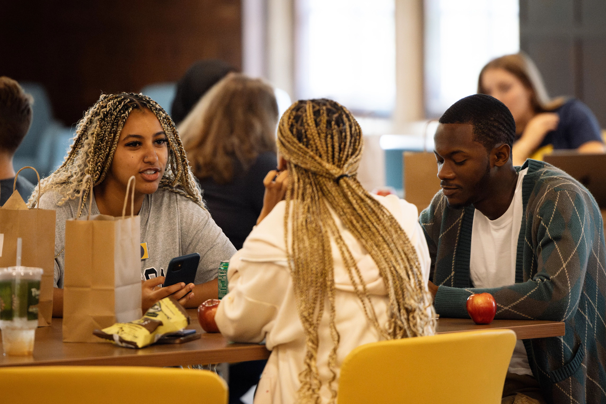

Am I a first-generation college student?
At the University of Michigan, undergraduates and graduate students are considered first-generation college students if neither parent or guardian has completed a 4-year college or university degree.
First-Generation Gateway Hours and Location:
- Summer Hours: Monday – Friday 9:00 – 3:00 PM
- Location:Third floor of the Student Activities Building in the Office of Academic Multicultural Initiatives.
- Questions for the First-Gen Gateway Staff? Email us at firstgeninfo@umich.edu